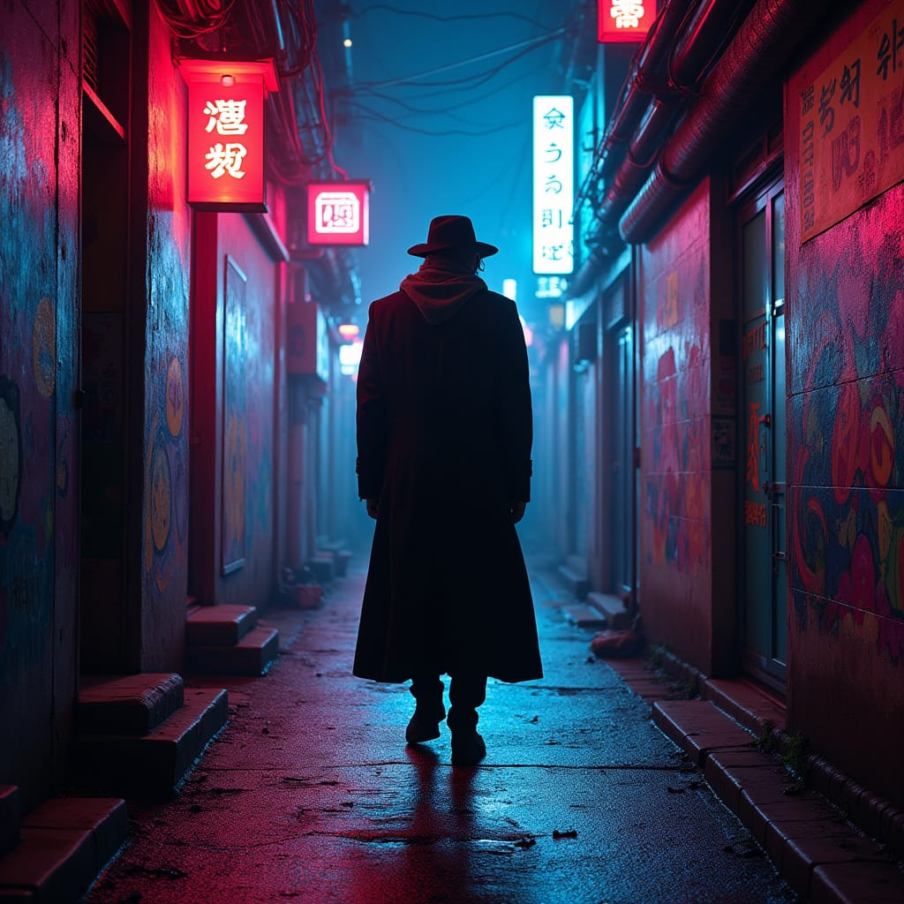

✅ 5 Common Features in the Images:
1. Back-Facing Silhouette Composition
In all images, the figure is walking away from the viewer, shown from behind. The character is centered, creating a narrative and mysterious mood.
2. Use of Neon Lighting (Especially Pink/Blue Tones)
Bright neon lights in shades of pink, blue, and purple dominate the scenes. This reflects a typical cyberpunk or noir aesthetic often used in futuristic visuals.
3. Narrow Alley with Central Perspective
Each scene features tight alleyways, flanked by buildings and neon signs. A strong central perspective guides the viewer's eyes deeper into the scene, enhancing immersion.
1. Back-Facing Silhouette Composition
In all images, the figure is walking away from the viewer, shown from behind. The character is centered, creating a narrative and mysterious mood.
2. Use of Neon Lighting (Especially Pink/Blue Tones)
Bright neon lights in shades of pink, blue, and purple dominate the scenes. This reflects a typical cyberpunk or noir aesthetic often used in futuristic visuals.
3. Narrow Alley with Central Perspective
Each scene features tight alleyways, flanked by buildings and neon signs. A strong central perspective guides the viewer's eyes deeper into the scene, enhancing immersion.
4. Wet Ground with Reflections
The streets appear wet, with reflections of neon lights adding a cinematic feel. This adds a dreamy, surreal atmosphere typical of urban night scenes.
5. High Contrast and Heavy Shadows
The background is illuminated, while the central figure remains a dark silhouette. This contrast suggests themes of anonymity, mystery, and solitude.
🤖 Why AI Generates These Results:
1. Prompt Pattern Matching - AI draws on datasets with similar aesthetic imagery.
2. Learned Visual Clichés - Trained on popular culture like Blade Runner or Cyberpunk 2077.
3. Aesthetic Optimization - Prefers visually pleasing compositions.
4. Emotional Coding - Conveys loneliness, mystery, and introspection.
The streets appear wet, with reflections of neon lights adding a cinematic feel. This adds a dreamy, surreal atmosphere typical of urban night scenes.
5. High Contrast and Heavy Shadows
The background is illuminated, while the central figure remains a dark silhouette. This contrast suggests themes of anonymity, mystery, and solitude.
🤖 Why AI Generates These Results:
1. Prompt Pattern Matching - AI draws on datasets with similar aesthetic imagery.
2. Learned Visual Clichés - Trained on popular culture like Blade Runner or Cyberpunk 2077.
3. Aesthetic Optimization - Prefers visually pleasing compositions.
4. Emotional Coding - Conveys loneliness, mystery, and introspection.

By Dall-E
Colored figure
Evil alien characters
Blue and Pink
Dark moody star

By Midjourney
Neon lights
Urban decay
Pink glow
Futuristic

By Stable Diffusion
Dark atmosphere
Blue tones
Silhouette
Mysterious

By Leonardo AI
Long corridor
Purple hues
Symmetrical
Perspective

By Firefly
Red dominant
High contrast
Moody lighting
Cinematic

By Imagen
Blue ambiance
Reflective surfaces
Clean lines
Modern tech